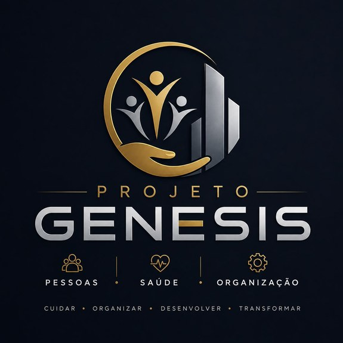

Conselho Integrativo — quem analisa e delibera
O olhar especializado e integrado dos conselheiros. Cada um analisa a sua área, e o Conselho cruza as leituras para entender como os problemas se ligam.
Conselho Integrativo · Gestão, pessoas e saúde
O Projeto Gênesis reúne especialistas em gestão, pessoas e saúde numa só mesa para diagnosticar a sua empresa por inteiro e tratar a causa, e não só o sintoma.

Você não confia nos números e não sabe onde ganha ou perde dinheiro.
Falta planejamento para os próximos anos, e crescer ou passar o bastão parece impossível.
Há conflitos entre áreas, e encontrar e manter bons profissionais é difícil.
Estresse, afastamentos e rotatividade viraram rotina.
Líderes e equipes resistem a mudanças e não mantêm constância nem foco.
Se você marcou mentalmente uma ou mais, o problema provavelmente não está só onde dói.
A dor que o empresário sente primeiro quase sempre é financeira: falta de caixa, desorganização, lucratividade que não sai do lugar. Mas os problemas financeiros e operacionais costumam ser sintomas de falhas na liderança.
Por trás deles estão a liderança sobrecarregada, as pessoas, a saúde de quem conduz o negócio e a falta de processos estruturados.
Uma empresa funciona como um corpo. Ela não pode ser fatiada em especialidades isoladas.
O Projeto Gênesis funciona como um Conselho Integrativo: especialistas em gestão, pessoas e saúde que diagnosticam a empresa por inteiro. Desse diagnóstico sai um Plano de Tratamento, executado em fases. Você contrata um ciclo de 6 ou 12 meses com o Conselho, que pode ser renovado.
O olhar especializado e integrado dos conselheiros. Cada um analisa a sua área, e o Conselho cruza as leituras para entender como os problemas se ligam.
O resultado do diagnóstico, ajustado ao momento da sua empresa. As ações são organizadas em fases, por prioridade de risco ou de estratégia.
Todas as especialidades analisam a sua empresa. O que muda de um cliente para outro é a ordem e o ritmo das fases.
Saúde integrativa, exaustão emocional, estresse da equipe e desenvolvimento da liderança. Olhamos para o clima, o adoecimento e o afastamento, a adaptabilidade dos líderes e a inteligência emocional.
Visibilidade do caixa, margens, precificação e lucro real. Olhamos para o caixa e a DRE, para o “voo cego” entre faturamento e lucro, para custos, desperdícios e previsibilidade.
Padronização, governança e autonomia da empresa em relação aos sócios. Olhamos para a dependência dos fundadores, o retrabalho, a retenção de talentos, a escala e a sucessão.
O elemento integrador: a reeducação corporativa e comportamental atravessa e conecta os três pilares, trabalhando os hábitos que fazem os mesmos erros se repetirem.
Você responde a um questionário rápido sobre as dores da sua empresa, aqui mesmo no site.
Conversamos com você para entender o momento da empresa e o que você quer para os próximos meses.
Você recebe a proposta de um ciclo de 6 ou 12 meses com o Conselho Integrativo, renovável.
Já dentro do ciclo, todos os pilares são avaliados, cada um pelo núcleo especialista.
Os especialistas cruzam as leituras, entendem como os problemas se ligam, definem as prioridades e organizam o Plano de Tratamento em fases.
Quem aconselha também executa. A ordem, o ritmo e o escopo das fases são definidos para a sua empresa.
Aos 3 meses, o Conselho revisa a evolução e ajusta o plano. No fim do ciclo, faz o balanço e recomenda os próximos passos.
Um ciclo, três deliberações. Kick-off, revisão trimestral e deliberação final: é na mesa do Conselho que o plano nasce, se ajusta e se renova.
Dentro do ciclo, todas as especialidades analisam a sua empresa juntas e cruzam o que encontraram.
Você contrata o Conselho inteiro, e não várias consultorias com uma parte do problema cada. O que muda é a ordem, o ritmo e o escopo das fases.
Os conselheiros não ficam só no parecer: eles colocam o plano em prática com você.
O desenvolvimento emocional, comportamental e de saúde caminha junto com a gestão do negócio.
Quatro núcleos de especialistas que trabalham juntos. Quem lidera cada projeto muda conforme a necessidade da sua empresa.
Reestruturação financeira (DRE, custos, precificação), planejamento estratégico, governança, sucessão e mapeamento de processos.
Auditoria trabalhista e financeira, departamento pessoal, compliance e controladoria.
Desenvolvimento de liderança, RH estratégico, clima e cultura, inteligência emocional, Comunicação Não Violenta e diagnóstico das condições de trabalho com programa de prevenção psicossocial (NR-1).
Suporte em saúde integrativa: avaliações individuais ou coletivas, regulação do estresse e programas de saúde para a equipe.
O Projeto Gênesis oferece suporte em saúde integrativa e não presta serviços médicos.
Responda a algumas perguntas sobre a sua empresa. Leva poucos minutos. Com as suas respostas, um conselheiro entra em contato para agendar uma reunião aprofundada.
Fazer meu diagnóstico inicialÉ uma mesa de especialistas em gestão, pessoas e saúde que analisa a sua empresa por inteiro. Em vez de cada consultor olhar só a sua parte, o Conselho cruza as leituras para entender como os problemas se ligam e decide junto as prioridades.
É o resultado do diagnóstico: um plano de ações organizado em fases, conforme a prioridade de risco ou de estratégia da sua empresa. “Tratamento” aqui é um conceito de gestão: tratar a causa dos problemas, e não só os sintomas.
Não. O Projeto Gênesis oferece um único formato: um ciclo com o Conselho Integrativo inteiro. O que muda de uma empresa para outra é a ordem, o ritmo e o escopo das fases.
Não. O Gênesis oferece suporte em saúde integrativa, voltado à regulação do estresse e ao bem-estar de líderes e equipes. Ele não substitui acompanhamento médico.
Os ciclos são de 6 ou 12 meses e podem ser renovados. A cada 6 meses, o Conselho faz três deliberações: o kick-off, a revisão trimestral e a deliberação final, que embasa a renovação.
O valor do ciclo é definido depois do diagnóstico inicial e da reunião aprofundada, conforme o cenário, o porte da sua empresa e o escopo de cada fase.
Não. O diagnóstico inicial é um questionário rápido para entendermos as suas principais dores e abrir a conversa. O diagnóstico integrado, com a análise completa do Conselho, é feito no início do ciclo.
Para donos e dirigentes de pequenas e médias empresas, de qualquer setor, que sentem dor no caixa ou na gestão.
Atendemos empresas num raio de até 150 km de Uberlândia. Demandas mais distantes são avaliadas caso a caso.
A participação dos colaboradores nas ações de saúde é voluntária. Os dados de saúde são tratados com sigilo e consentimento específico, conforme a LGPD. A empresa recebe apenas informações anonimizadas, quando necessário, e o resultado individual é entregue só à própria pessoa.
Fale com o Projeto Gênesis pelo canal que preferir.
@genesisintegrativa.com.br
Seguir no InstagramDiagnóstico inicial
Responda a algumas perguntas sobre a sua empresa. Leva poucos minutos. Com as suas respostas, um conselheiro entra em contato para agendar uma reunião aprofundada.
Este é um diagnóstico inicial, para abrir a conversa. A análise completa do Conselho acontece no diagnóstico integrado, já dentro do ciclo.